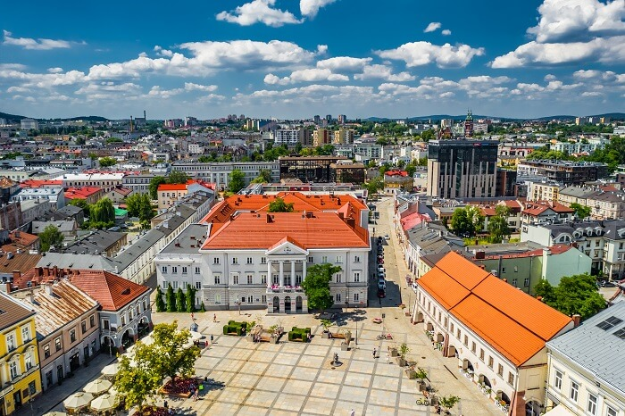
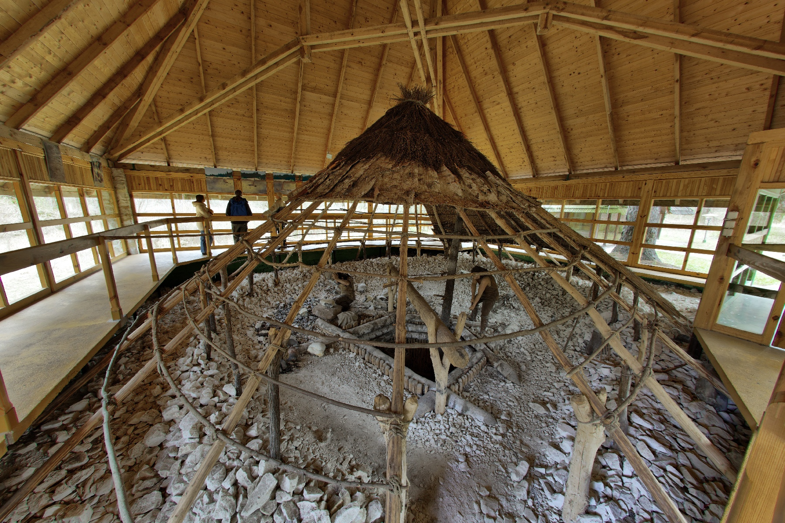

Województwo świętokrzyskie, położone w centralno-południowej Polsce, zachwyca pięknymi krajobrazami, bogatą historią i wyjątkowymi atrakcjami przyrodniczymi. Jego największym skarbem są Góry Świętokrzyskie – jedne z najstarszych gór w Europie. Region słynie z malowniczych szlaków turystycznych, zabytków oraz miejsc związanych z legendami i tradycjami. Warto odwiedzić Kielce, Święty Krzyż oraz liczne rezerwaty przyrody, które czynią województwo idealnym miejscem do aktywnego wypoczynku i poznawania polskiego dziedzictwa kulturowego.

